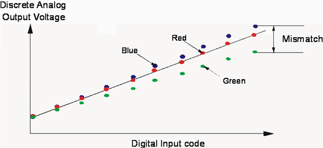
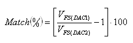
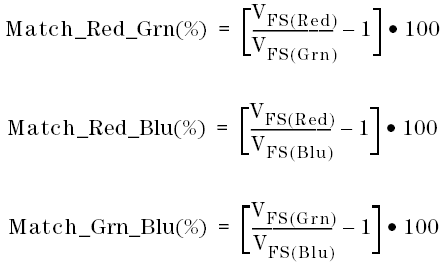

Gain Mismatch (Match)
Gain mismatch is the difference in full scale output values (FS) from one DAC to the next, expressed in %.

The equation used in DAC Matching is the following:

where: VFS(DACn) is the full-scale voltage outputs of the DACs being tested.
For example:
